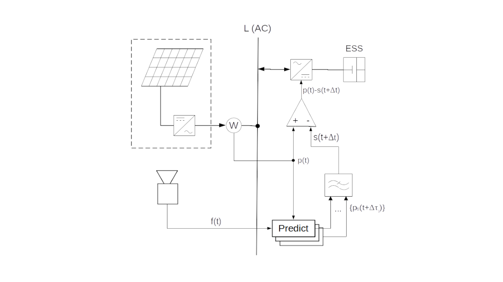

If we were to smooth the renewable power by an analogue LPF implemented e. g. from elements of electrical inductance and capacity, then the excessive accumulated energy due to the filter's time lag Δt cannot be eliminated, unless its input is continuously driven by the future signal pf(t+Δt). Unlike the analogue LPF, its numerical model calculates a complete time series of the corresponding output signal s(t+Δt) immediately (if we neglect duration of its computation) at any time t, if the entire time series of input values p(τ) is available in the interval (0, t+Δt]. The numerical model of LPF can be given more precise input values from the near future, than these are predictable at the maximum advance Δt. Simultaneous excitation of the LPF model by multiple predictors (that is, by a multi-predictor) with advance intervals between 0 and Δt can significantly improve the accuracy of the aggregated signal s(t+Δt). This is reflected by the smaller accumulation rate (closer to its theoretical minimum) in contrast to the analogue LPF driven by a single input signal advancing by Δt, predicted by the equivalent technology.
Assuming that LPF is a linear, time-invariant system, the advantage of exciting the LPF model by the multi-predictor can be proven by means of the principle of superposition: Let us calculate the LPF response to the input signal p(t+Δt) as a convolution of the filter’s impulse response and its input signal:
$$s(t+\Delta t)=h(t+\Delta t)*p(t+\Delta t)=\int_{0}^{t+\Delta t} h(\tau)p(t+\Delta t-\tau)d\tau\tag{1}\label{eq:1}$$
For the current time t holds: In the τ area where Δt-τ≤0 applies, the measured (past) values p are integrated, while in the τ area where Δt-τ>0, the predicted (future) values pf are integrated. Convolution \eqref{eq:1} integrates the input signal of the filter over infinitesimally small intervals dτ. Within each differential dτ, the future value pf can be estimated by a specific predictor producing a minimized error with respect to its particular advance Δt-τ.

In theory, the advantage of exciting the numerical model of LPF by the multi-predictor when smoothing the random fluctuations in the RES power results from a synergy of the following three fundamental properties:
- The lower advance Δt, the smaller prediction error in pf(t+Δt)
- Convolution \eqref{eq:1} integrates a product of two counter-running time signals
- The impulse response of an ideal LPF begins with value 0 and reaches its first extremum approximately at the time Δt.
The synergistic effect suppresses prediction error in the filter's aggregated signal s(t+Δt) in a sense, that given the RES intermittency, the LPF model excited by the multi-predictor exhibits much less accumulation rate than the same filter does when being excited by the single predicted signal advancing by Δt. Based on the measured GI data, the numerical simulation of smoothing has confirmed that this synergy results in a significantly lower accumulation rate than with conventional smoothing methods. diagrams (Figure 7, 11) Its relative advantage exists regardless of the prediction technology used.